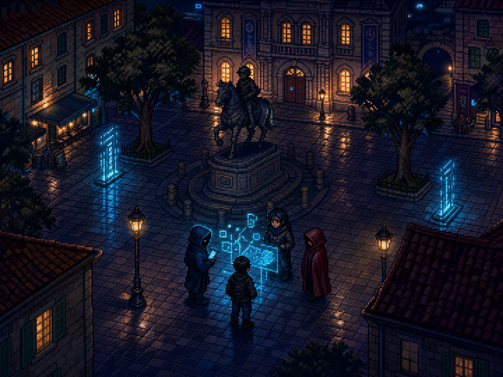
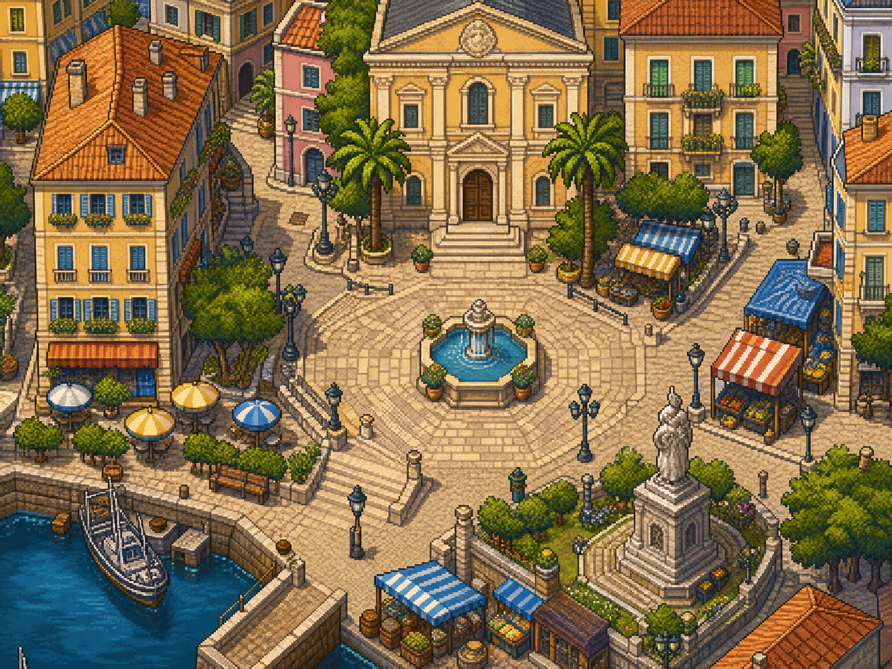
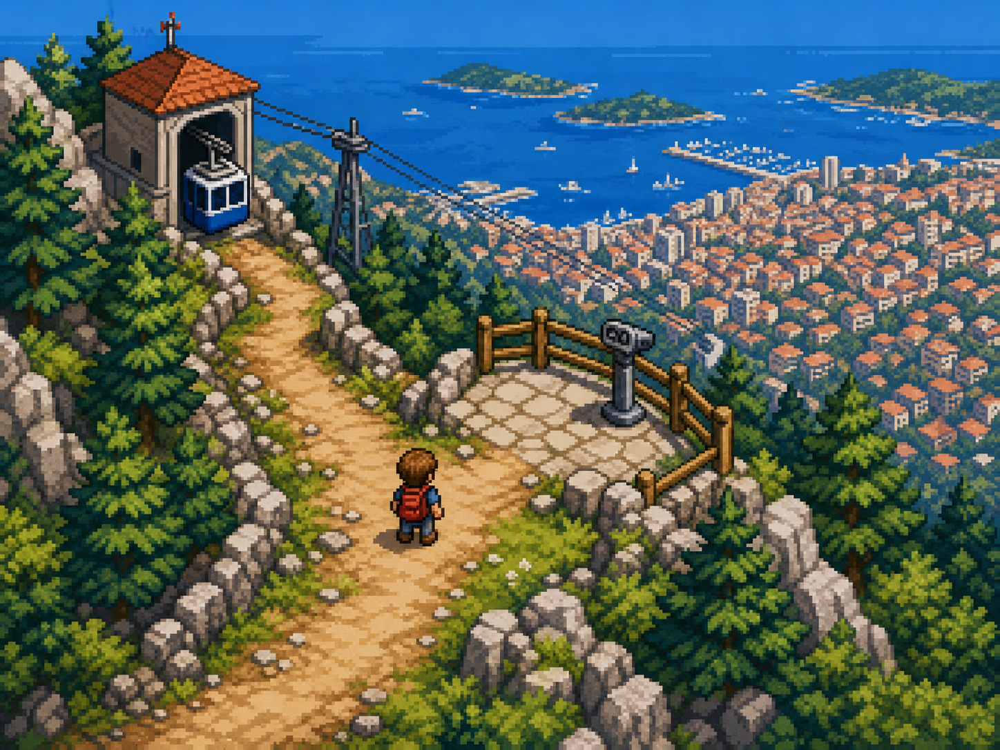
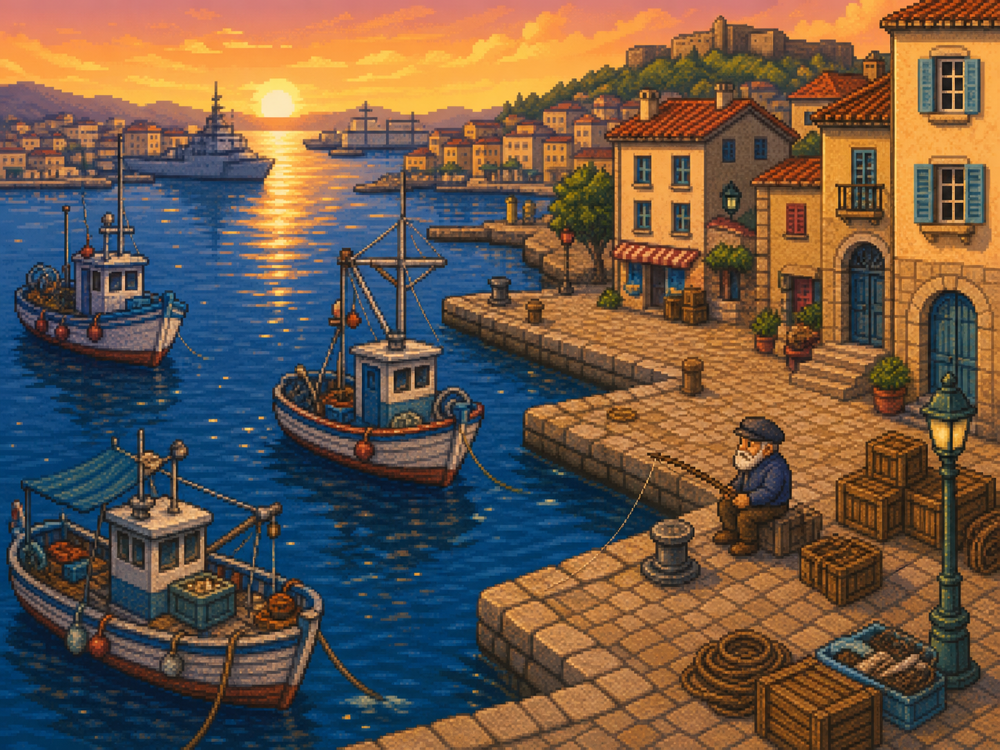

CLEVERMAX VAR
Notice Officielle - Edition Prototype Retro GBA
Aventure
Cyber-Edu
Toulon



"Max, des anomalies de securite se multiplient. Va sur le terrain, recoupe les indices et protege la ville avant l'attaque principale." - RC
Dans une version stylisee de Toulon, chaque quartier cache des indices: badges exposes, sessions ouvertes, messages suspects, acces non controles.

↑ ↓ ← → Bouger Max.
A Parler/valider.
B Annuler/fermer.
Start Quetes et options.
Sauvegarde locale recommandee apres chaque mission importante.


Controle des acces.
Longueur + unicite.
Verifier liens/PJ.
Ne pas laisser ouvert.
Baseline: Joue. Apprends. Protege.
Phase 1: Prototype jouable
Phase 2: Monde multi-zones
Phase 3: Pipeline ROM-like et edition map
Projet: CleverMax Var
Intentions: apprendre en jouant
Joue. Apprends. Protege.